WebMatrix：NuGet サーバーをたてる
公開日：
オレオレデザインのベースを NuGet 化しよう
プライベート NuGet サーバーがあれば、公式レポジトリを汚さなくてすむのだけど
@daruyanagi 立てればいいやん
2013-04-04 16:55:16 via みについ to @daruyanagi
@shibayan 前にブログに書いてた方法でまだいけんの？
2013-04-04 16:55:32 via MetroTwit to @shibayan
@daruyanagi 多分
2013-04-04 16:55:48 via みについ to @daruyanagi
というわけで、NuGet.Server を利用してプライベートリポジトリを構築する - しばやん雑記 を参考に自分で NuGet サーバーをたててみた。WebMatrix で。このブログはできるだけ WebMatrix でなんとかやってしまう主義なのです。
プロジェクトを作成する
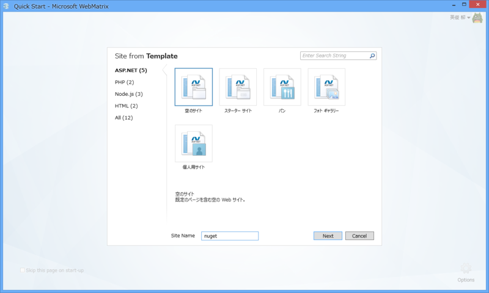
まず、ASP.NET で「空の Web サイト」テンプレートを選択。最初はテンプレートじゃなくて、クイックスタートで［Empty Site］メニューを選んだのだけど、これだと NuGet が使えないみたい。ちょっと泣いた。
次に NuGet で NuGet Gallery | NuGet.Server 2.2.2 をインストール。
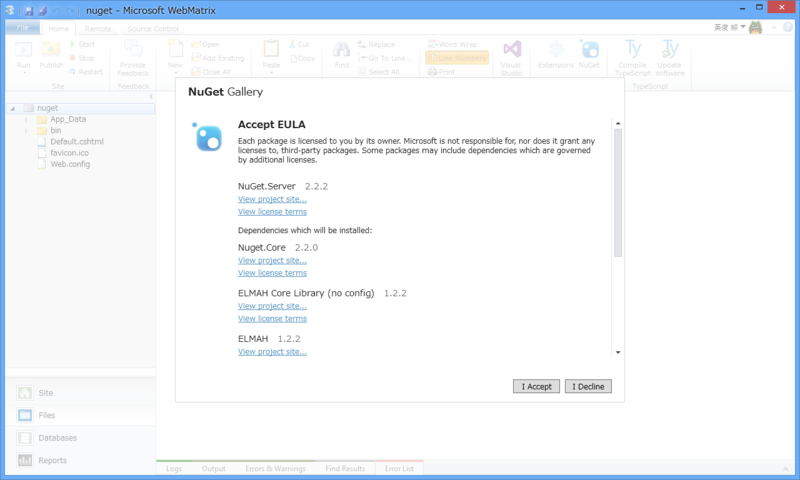
そのとき、あらかじめテンプレートの favicon.ico を削除しておくといい。NuGet.Server にはかわいい favicon が含まれているのだけど、インストールがスキップされてしまう。
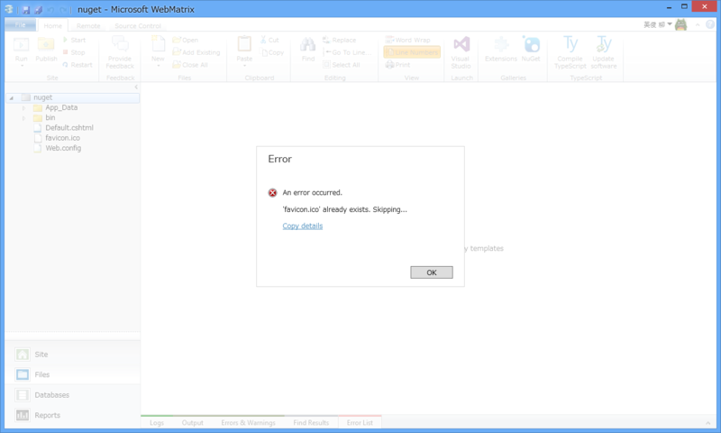
下準備はこれで完了。
実行 & 手直し
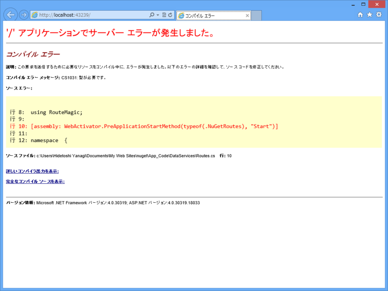
とりあえず実行するとエラーになる。~/App_Code/DataServices/Routes.cs に少し手を加えないといけないようだ。
using System.Data.Services; using System.ServiceModel.Activation; using System.Web.Routing; using Ninject; using NuGet.Server; using NuGet.Server.DataServices; using NuGet.Server.Infrastructure; using RouteMagic;// [assembly: WebActivator.PreApplicationStartMethod(typeof(.NuGetRoutes), "Start")] [assembly: WebActivator.PreApplicationStartMethod(typeof(NuGetRoutes), "Start")]
// namespace { namespace ASP { public static class NuGetRoutes { public static void Start() { MapRoutes(RouteTable.Routes); }
private static void MapRoutes(RouteCollection routes) { // The default route is http://{root}/nuget/Packages var factory = new DataServiceHostFactory(); var serviceRoute = new ServiceRoute("nuget", factory, typeof(Packages)); serviceRoute.Defaults = new RouteValueDictionary { { "serviceType", "odata" } }; serviceRoute.Constraints = new RouteValueDictionary { { "serviceType", "odata" } }; routes.Add("nuget", serviceRoute); }
private static PackageService CreatePackageService() { return NinjectBootstrapper.Kernel.Get<PackageService>(); } } }
修正個所は二か所かな？ WebActivator というのはよくわからないけれど、名前から察するに、おそらくアプリケーションの実行前にメソッドを挿入（インジェクション）するものだと思う。なぜわざわざ型名を .NuGetRoutes としてあったのかはよくわからない。
名前空間は空になっている。アプリケーションの名前空間を入れておこう。WebMatrix で作成するアプリケーションの名前空間は ASP みたいなので、それを加えておく。
追記（13:45）
だるさん、名前空間が空っぽになったのは Web Pages に名前空間という概念が無いからとられへんかったんやろ
ほんとは .NuGetRoutes の前に名前空間が入る
NuGet をインストールする際、テンプレートにしたがって名前空間が補われるのだけど、Web Pages には名前空間がない（とれない）ので、空白になってしまうということみたいだね。なるほどなるほど。
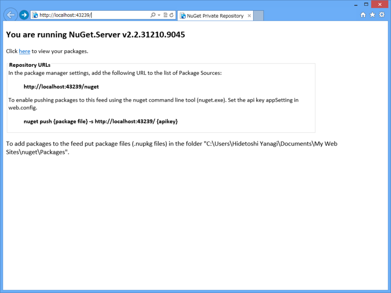
これでコンパイルは通るのだけど…… http://localhost:43239/nuget/ （ポートはそれぞれの環境ごとに違うので読み替えてくれ）が 404 になってしまう。どうもさきほどの NuGetRoutes.Start() がちゃんとキックされていないみたい。
#~/_AppStart.cshtml@{ NuGetRoutes.Start(); }
というわけで、無理やりたたき起こしてやった（ぁ
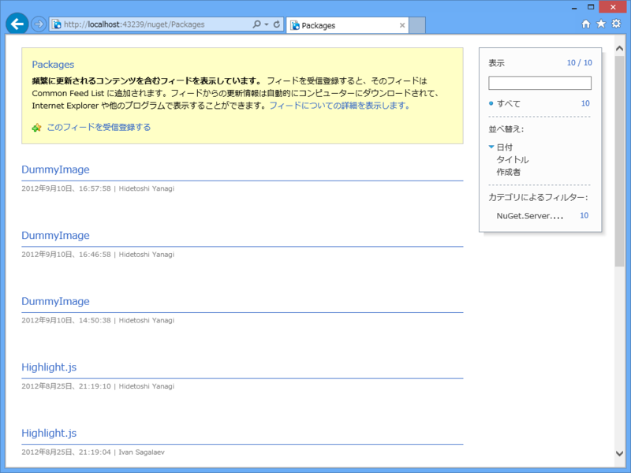
これでうまく動いた。
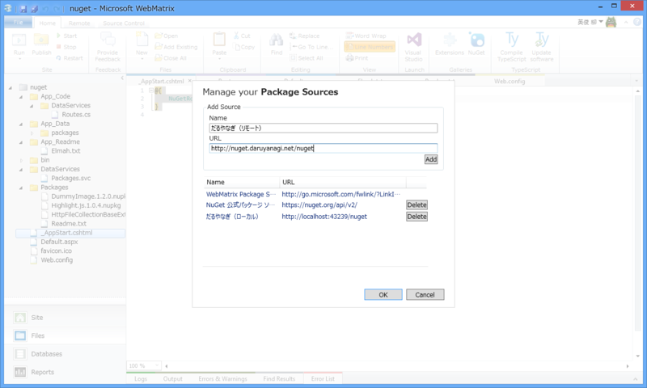
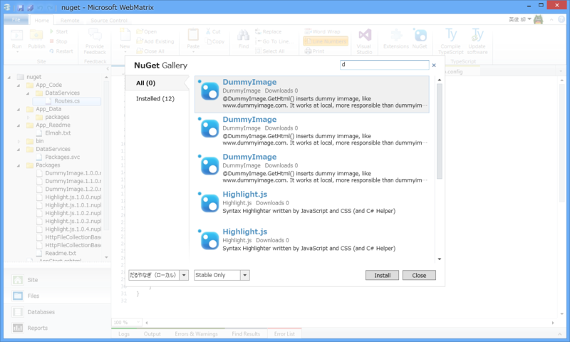
http://localhost:43239/nuget/ を NuGet のパッケージソースに加えれば、~/Packages に放り込んだ NuGet パッケージが検索できるようになるぞー！
ExpressWeb へデプロイ
ローカルでそのまま使ってもいいのだけれど、リモートでホストした方が便利だと思う。今回は ExpressWeb へアップロードしたけれど、動作させるためにはエラーを二つ潰す必要がある。
複数サイトバインディング
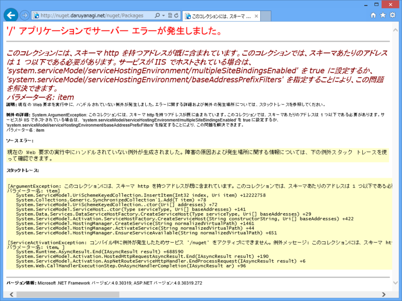
よくわからんが、エラーメッセージにしたがって Web.config を書き換えればよい。
<system.serviceModel> <serviceHostingEnvironment aspNetCompatibilityEnabled="true" multipleSiteBindingsEnabled="true" /> </system.serviceModel>
認証スキーム
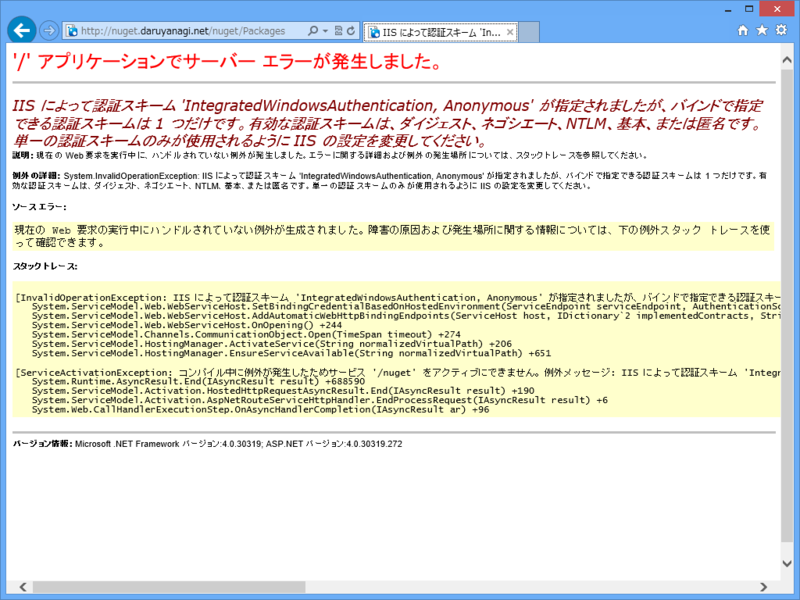
これまたよくわからんが、ExpressWeb 側で Windows 認証を無効化したらエラーが解消した。
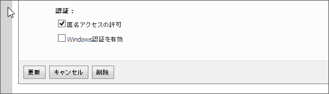
できた！ プッシュできるようにしてもいいのだけれど、WebMatrix で管理するなら NuGet パッケージを ~/Packages に追加するのは別に苦じゃないので、今回はパス。